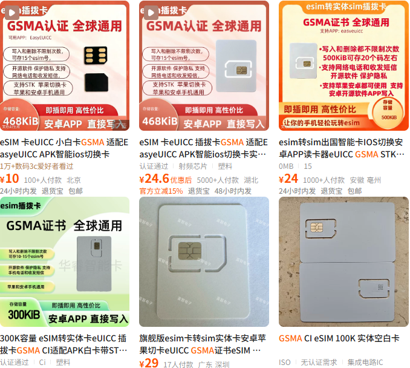

这种eSIM转实体卡（eUICC）又被推友叫“小白卡”，一张包邮的情况下卖20左右，见得比较多的是420K容量的那款
大部分都是东信和平制卡，EID89086030开头并没什么不好，像9eSIM V0、Xesim、5ber、Switch by PlanB等都是ECP方案
好处在于便宜，坏处就是像美国运营商、日本NTT DOCOMO拉黑了EID，但大部分GSMA标准的运营商都能写，包括中国联通给外宾提供的eSIM临时卡。正常一个eSIM Profile（配置文件）的大小在50KB左右，420K差不多可以写6-8张eSIM，建议写个1-3张就够了省得哪天切卡突然爆炸
当然像iPhone这种原生eUICC也容易炸卡，随着Apple在LPA上写了边界保护后，一旦容量要超出将会触发保护减少炸卡的可能。如果写一堆eSIM配置文件，那还是建议整1.5M的9eSIM V3或eSTK Max，使用NAIXI可以打9折就是了
大部分都是东信和平制卡，EID89086030开头并没什么不好，像9eSIM V0、Xesim、5ber、Switch by PlanB等都是ECP方案
好处在于便宜，坏处就是像美国运营商、日本NTT DOCOMO拉黑了EID，但大部分GSMA标准的运营商都能写，包括中国联通给外宾提供的eSIM临时卡。正常一个eSIM Profile（配置文件）的大小在50KB左右，420K差不多可以写6-8张eSIM，建议写个1-3张就够了省得哪天切卡突然爆炸
当然像iPhone这种原生eUICC也容易炸卡，随着Apple在LPA上写了边界保护后，一旦容量要超出将会触发保护减少炸卡的可能。如果写一堆eSIM配置文件，那还是建议整1.5M的9eSIM V3或eSTK Max，使用NAIXI可以打9折就是了
